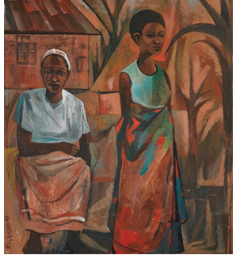

After the independence, the production and promotion of formal visual art such as printmaking, graphics, textiles and fashion design, and animation design flourished in the country. Western cultural patrons recruited formal artist scholars who became ambassadors of the modern art.
During independence, most of these artists were involved in various art training programmes, particularly drawing, painting, and printmaking. Since 1970 the Tanzania government established art education at Chang’ombe and Butimba Teachers Colleges, likewise several art projects were implemented at the Nyumba ya Sanaa Art Project and the Tingatinga Arts Society in Dar es Salaam. Other developments include the opening of the Bagamoyo College of Art in 1980 and later on became a Taasisi ya Sanaa na Utamaduni Bagamoyo (TaSUBa) in 2007, where young talented fine and performing artists were taught. Presently visual art is taught in many primary and secondary schools. The universities of Dar es Salaam and Dodoma have fine art courses which teach art programmes.
Some well-known artists are Prof Elias Jengo, Mohamed Raza and Joseph Nyunga. Figure 5.21 shows a painting by Elias Jengo, a famous fine art teacher and professor of fine art who worked for a long time at the University of Dar es Salaam, Tanzania. Figure 5.22 shows a painting by Raza Mohamed, a renowned artist and illustrator of various national postal stamps and academic books for Tanzanian primary and secondary schools. Figure 5.23 shows the Kimbunga sculpture by Joseph Nyunga who worked at Mwenge handcraft village in Dar es Salaam.
